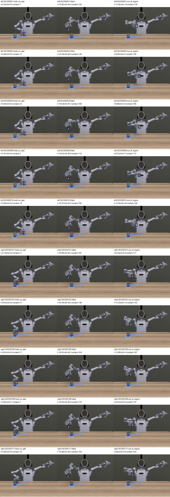

本页尚无通过全部准入的新版正式成绩。漂移候选不再发布；下面是独立放置判定重算，执行链、专家及负例视频准入未完成，不能据此宣称模型正式领先。未开跑的配置success=null，历史strict-v1不覆盖。
已停止拥有的自动续提器和未开跑任务的密度回退续提。原16卡四个任务保留当前批次，下一组4卡释放后按12卡运行；不提seed3/4和新D1/D2任务，等待总负责确认pi0.5已拿卡。没有停止或取消正在运行的GPU评测。
新增小报告/脚本在授权POS目录，大型原始日志和新执行链产物在授权BOS的liyufeng目录。源FAST输入只读，原运行批次允许继续。源FAST主树实测1,229,451,450,880字节待核对迁移范围；BOS主树旧测212,230,656字节，另有256份本任务归档对象合计255,944,049,219字节（不能漏算归档占用）；新恢复/支持复制增量另行计入。原文件未删，先复制→逐SHA验证→更新引用。未把缓存体积冒充训练数据体积。
源码保留原XY容差20mm，直立cos≥0.97，无机器人接触，目标表面接触或静置高度±5mm；连续0.25秒。不使用角速度/线速度阈值。任务顺序、3秒抓稳、倒液95%、洒漏≤2%、倾倒安全包络和B原有保护保留；记录episode结束时重新检查A/B放置。初始在垫上不直接计为已完成任务。7项基本检查已通过，仍不代替专家/负例准入。
优先786条第一轮已完成：TTC trainresize h4 62/100（unknown0）、h8 62/100（unknown1）；D0 35/100。latest phase2超时子集为46/141、52/145，绝不是完整500条的成功率。原版TTC65条trace已在3个归档按原SHA全部恢复到BOS并重算：h4为19/100，h8为17/100，均unknown0。Mem-0 trainresize/latest的在途完成子集单列诊断，配置未完成不发布正式率。历史8000条新判定CPU重算已完成：复用已验证缓存的8进程补算约433.5秒，原运行批次未中断。10条新近归档的TTC20k trace也已补齐；全部Mem-0/TTC历史子组unknown=0，仅余69条旧pi0.5原trace缺失，保留unknown，不外推。
| 方法|数据|ckpt|h | n | strict-v1 | placement-v1.1 | unknown | 平均阶段 |
|---|---|---|---|---|---|
| mem0|latest|20000|4 | 500 | 6 | 11 | 0 | 0.69 |
| mem0|latest|20000|8 | 500 | 4 | 9 | 0 | 0.63 |
| mem0|latest|30000|4 | 500 | 65 | 111 | 0 | 1.648 |
| mem0|latest|30000|8 | 500 | 64 | 118 | 0 | 1.65 |
| mem0|v13|20000|4 | 500 | 76 | 112 | 0 | 1.368 |
| mem0|v13|20000|8 | 500 | 65 | 91 | 0 | 1.308 |
| mem0|v13|30000|4 | 500 | 124 | 199 | 0 | 1.862 |
| mem0|v13|30000|8 | 500 | 96 | 168 | 0 | 1.758 |
| ours|v13|20000|4 | 500 | 16 | 28 | 0 | 1.138 |
| ours|v13|20000|8 | 500 | 20 | 31 | 0 | 1.082 |
| ours|v13|30000|4 | 500 | 78 | 108 | 0 | 1.448 |
| ours|v13|30000|8 | 500 | 73 | 106 | 0 | 1.368 |
| pi05|v13|20000|4 | 500 | 0 | 0 | 0 | 0.376 |
| pi05|v13|20000|8 | 500 | 2 | 7 | 1 | 0.7555 |
| pi05|v13|30000|4 | 500 | 0 | 0 | 25 | 0.0505 |
| pi05|v13|30000|8 | 500 | 0 | 0 | 43 | 0.2495 |
阶段3但episode末尾未保留放置时，整集仍失败，故phase_hist[3]可能大于成功数。冻结来源及完整阶段分布。
10条训练episode的全部有效15Hz标签已验证为interval_end，与对应8tick区间末native目标逐位相同（max_abs=0），排除padding；不能“修正”成区间首步。旧链位置q_j=q_prev+j/8·(q_end−q_prev)，手臂前馈先有限差分限幅±0.5，再从上一帧末速度按j/8 ramp；手部前馈保持0。原生记录手部前馈也为0，这不等于符合新的13维统一规范。
独立新版本interval-end13-linear-fd-v1.1-r7：同样插值位置，全部13维v_j=(q_end−q_prev)/(8·dt)，不做arm-only ramp/clip，手部同样有限差分。8项公式测试通过；支持树97个冻结SHA已验证，物理未改。在旧20条专家当前批次结束后，复用同一物理GPU1开展新的20条对照，不新增低优卡。新20条对照已启动，并在运行中同时计算placement-v1.1主判定和strict-v1影子判定。首批发现BOS挂载写原始trace时报OSError(12, Cannot allocate memory)，已暂停本批新case派发，保留在途子进程；此类基础设施异常记unknown，不能算策略或专家物理失败。最小4MB流式写探针已通过，继续定位实际Recorder写入路径。旧已完成20条重算：原生6/10，端点4/10，4<6−1，未通过相对成功数门槛。未通过前不会给三方法正式链冠以“已验收”。
验收要求：全部13关节RMSE≤0.005rad；左右各5条，端点链v1.1成功数≥原生链−1。若执行链必须修改，受影响配置的阶段A要重跑；当前strict成绩保留为历史诊断。
同100场景新放置判定配对：TTC trainresize对D0为双方成功24、仅TTC38、仅Mem-0 11、双方失败27；差+27pp，左右分层bootstrap95% [16,38]。D0仍为PIL，不能冒充最终公平对照。逐模式配对证据。
10条原采集scene_manifest与原生回放BATCH_MANIFEST的PhysX配置逐键比较无差异，dt均1/120。采集/回放两侧源码均cuda:0、TGS、最大位置32/速度4、CCD启用；当前没有CPU/GPU不一致的证据。PBD、杯体惯量/摩擦/接触offset、有效USD参数及粒子初始坐标仍继续核对；原始逐粒子参考未保留在已提取包中，不能把相同计数当作粒子位置逐位一致。已找到构造流程差异：已从采集包c3_launch.py第152行确认PSIBOT_SETTLE_TICKS覆盖为1800，粒子碰撞模式off也与评测相同。旧后端reset先额外120tick再settle1800；R4构造只有1800tick，并有额外初态/粒子缓存写入。base_env中600不是最终启动值，不能据此说采集只settle600。这是已定位的初始化流程差异，尚未证实是滑转根因。原始相机节点入口暂时连接超时，未擅自改物理参数。
从左右各5条真实源视频解码30帧：垫上仍接触10、倾倒10、出区域10，放置谓词均为false，已人工核对对应画面与原生接触/位姿记录。它们是成功源轨迹内的放置负例帧，不能把源整集重新记为失败；另已抽取30条真实失败episode的结束帧（每类10条，左右各5），三类均未被新判定计为成功；视频人工复核仍待完成，未把抽帧代替完整视频核验。30条结束状态与源SHA。

最近完整600秒全4卡均值：Mem-0 V13 86.4%、latest 88.9%、TTC seed1 65.2%、seed2 75.3%；全16卡约78.9%，仍未全部达标。因此不申请新卡。未来增加进程数仍需帧0/50准入和显存保护，不热改当前冻结计划。
24案例72视频已转码校验，最大1,670,898字节。对象可通过认证HEAD读取，说明上传成功；但单对象public-read ACL及上传ACL头均被STS返回403 AccessDenied（请求761b0ac4-5c1a-40fe-8a02-6c73286bf435）。尚无匿名200验证，所以不向媒体索引填私有链接、不放签名URL、不改bucket策略。已请求总负责提供已有公开上传环境或这些对象的ACL授权；JSON日志/CORS仍待统一方案。
所有真实权重按h4/h8登记待准入v1.1行；pi0.5归其负责agent，共享本任务规范不重复抢卡。附着v1已因禁用接触碰撞作废，不能直接复用；碰撞保留版本待机械准入及对应原接触阶段A完成后运行。下面“准入中”不代表GPU已开始测试，不给出虚假的固定开始时刻。
| record | ckpt | 相机 | 状态 | 原因 | 预计开始条件 |
|---|---|---|---|---|---|
| 3-v13-mem0 | 20000 | third_person | 准入中 | 等待统一13维执行链专家准入；现存strict批次继续运行/离线重算，仅作诊断 | 准入通过后的首个可用slot；暂按12卡调度，未得到pi0.5拿卡通知前不恢复16卡 |
| 3-v13-mem0 | 30000 | third_person | 准入中 | 等待统一13维执行链专家准入；现存strict批次继续运行/离线重算，仅作诊断 | 准入通过后的首个可用slot；暂按12卡调度，未得到pi0.5拿卡通知前不恢复16卡 |
| 3-v13-ours | 20000 | third_person | 准入中 | 等待统一13维执行链专家准入；现存strict批次继续运行/离线重算，仅作诊断 | 准入通过后的首个可用slot；暂按12卡调度，未得到pi0.5拿卡通知前不恢复16卡 |
| 3-v13-ours | 30000 | third_person | 准入中 | 等待统一13维执行链专家准入；现存strict批次继续运行/离线重算，仅作诊断 | 准入通过后的首个可用slot；暂按12卡调度，未得到pi0.5拿卡通知前不恢复16卡 |
| 3-latest-third | 20000 | third_person | 准入中 | 等待统一13维执行链专家准入；现存strict批次继续运行/离线重算，仅作诊断 | 准入通过后的首个可用slot；暂按12卡调度，未得到pi0.5拿卡通知前不恢复16卡 |
| 3-latest-third | 30000 | third_person | 准入中 | 等待统一13维执行链专家准入；现存strict批次继续运行/离线重算，仅作诊断 | 准入通过后的首个可用slot；暂按12卡调度，未得到pi0.5拿卡通知前不恢复16卡 |
| 3-latest-chest | 20000 | chest | 准入中 | 等待统一13维执行链专家准入；现存strict批次继续运行/离线重算，仅作诊断 | 准入通过后的首个可用slot；暂按12卡调度，未得到pi0.5拿卡通知前不恢复16卡 |
| 3-latest-chest | 30000 | chest | 准入中 | 等待统一13维执行链专家准入；现存strict批次继续运行/离线重算，仅作诊断 | 准入通过后的首个可用slot；暂按12卡调度，未得到pi0.5拿卡通知前不恢复16卡 |
| 3-v13-pi05 | 20000 | third_person | 未开始 | 交由pi0.5评测agent执行；共享本任务执行链和放置判定准入报告，不重复占卡 | 准入通过后的首个可用slot；暂按12卡调度，未得到pi0.5拿卡通知前不恢复16卡 |
| 3-v13-pi05 | 30000 | third_person | 未开始 | 交由pi0.5评测agent执行；共享本任务执行链和放置判定准入报告，不重复占卡 | 准入通过后的首个可用slot；暂按12卡调度，未得到pi0.5拿卡通知前不恢复16卡 |
| 3-jitter-mem0 | 20000 | chest | 准入中 | 旧chest训练视角/采集执行链需独立核对；不得套用latest相机 | 准入通过后的首个可用slot；暂按12卡调度，未得到pi0.5拿卡通知前不恢复16卡 |
| 3-jitter-mem0 | 30000 | chest | 准入中 | 旧chest训练视角/采集执行链需独立核对；不得套用latest相机 | 准入通过后的首个可用slot；暂按12卡调度，未得到pi0.5拿卡通知前不恢复16卡 |
| mem0-ablated | 30000 | third_person | 准入中 | 等待统一13维执行链专家准入；现存strict批次继续运行/离线重算，仅作诊断 | 准入通过后的首个可用slot；暂按12卡调度，未得到pi0.5拿卡通知前不恢复16卡 |
| ttc-aligned | 30000 | third_person | 准入中 | 等待统一13维执行链专家准入；现存strict批次继续运行/离线重算，仅作诊断 | 准入通过后的首个可用slot；暂按12卡调度，未得到pi0.5拿卡通知前不恢复16卡 |
| ttc-aligned-ablated | 20000 | third_person | 准入中 | 等待统一13维执行链专家准入；现存strict批次继续运行/离线重算，仅作诊断 | 准入通过后的首个可用slot；暂按12卡调度，未得到pi0.5拿卡通知前不恢复16卡 |
| ttc-aligned-ablated | 30000 | third_person | 准入中 | 等待统一13维执行链专家准入；现存strict批次继续运行/离线重算，仅作诊断 | 准入通过后的首个可用slot；暂按12卡调度，未得到pi0.5拿卡通知前不恢复16卡 |
| 3-latest-pi05-issue7 | 40000 | third_person | 未开始 | 交由pi0.5评测agent执行；共享本任务执行链和放置判定准入报告，不重复占卡 | 准入通过后的首个可用slot；暂按12卡调度，未得到pi0.5拿卡通知前不恢复16卡 |